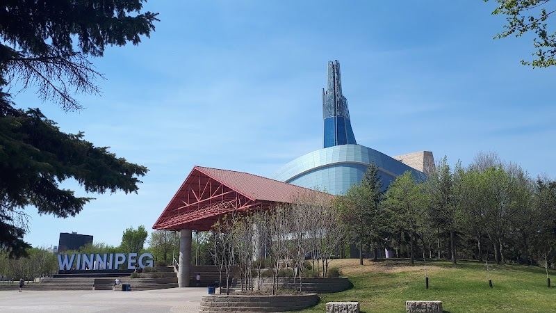

Arctic Glacier Winter Park 2026: Skating at The Forks

The Arctic Glacier Winter Park at The Forks is the on-land half of a Winnipeg winter: skating rinks, a toboggan slide, and more than 1.2 kilometres of groomed skating and walking trails along the riverbank. Entry is free. In past seasons it has opened in time for Christmas break, while the Nestaweya River Trail out on the frozen Red and Assiniboine has not opened until January.
Those few weeks are the most useful thing to know if you are booking a winter trip, because people arrive expecting to skate a river and find that only the park is open. The two surfaces are not interchangeable. Here is how they differ on the things that decide a day out.
The park does not wait for the ice
Everything in the winter park sits on land. The rinks are built on the plaza and the bank, the slide is a structure, and the trails are groomed over the riverside paths, so the whole thing can open as soon as the cold is reliable. The river trail cannot work that way. The Forks measures ice thickness before any section opens, monitors it daily once it does, and closes stretches when cracks appear or when the grooming machines cannot safely reach them. Sections open one at a time rather than all at once.
In recent winters the river trail has opened in January and closed in March, and its length has swung between roughly six and ten kilometres depending on the weather that year. If your trip lands between mid-December and New Year, plan around the park and treat the river as something that might happen.
Free park, paid blades
Neither surface charges admission. What you pay for is skates. Rentals are in The Forks Market Atrium, beside the changing area, at $8 for adults and $4 for children and seniors. The rental counter keeps shorter hours than the park does, so an evening skate is the one worth checking theforks.com for in advance. Bringing your own is free and skips the desk entirely.
Wind is the variable, and the canopy is the answer
Winnipeg cold is manageable when you are moving. Wind across an open surface is what ends an outing early, and the river is a trench between two banks with nothing to break it. The Canopy Rink is covered, with music running through it from Manitoba Music's catalogue and live DJs on some nights. The CN Stage Rink, beside the outdoor stage, is bigger and open to the sky. On a night when the wind chill sits in the minus thirties, the canopy is the one you will still be on after twenty minutes.
Daylight works the same way. By late December the sun is down in Winnipeg around half past four, so most holiday skating happens in the dark. That suits the park, where the market doors are a hundred steps from the ice, better than it suits the far end of a river trail.
With children, the park wins on almost every count
The slide, the rinks and a heated building are within a few minutes of each other, which is what matters when a five-year-old announces they are finished. The Forks Market has washrooms, food and somewhere to sit with boots off. Out on the river, the nearest indoor anything can be a kilometre of skating away, and a kilometre is long on tired legs.
The warming huts are worth the detour once you are out there. Architects and artists design new ones each year through an open competition, and they are genuinely good buildings. They are also shelters rather than places with washrooms and a kettle. Save the river for the second visit, after the novelty of the rinks has worn off.
Getting to The Forks without a car
The 38 Salter runs into The Forks seven days a week, and the stops on Main Street outside Union Station, at Main and Broadway, leave a short walk to the market doors. Winnipeg Transit lists the 2026 fare at $3.45 in cash or $3.10 on peggo e-cash, and drivers do not carry change. From our corner of Crescentwood the D19 Corydon route runs downtown to a terminal on Kennedy Street, which leaves about a twenty-minute walk southeast to the market, or a transfer when the wind is up. Winter service gets rerouted, so Navigo, Winnipeg Transit's trip planner, is the thing to check on the day rather than the timetable.
Where to stay for a winter weekend at The Forks
Our two-bedroom home is in Crescentwood, just off Corydon Avenue, about four kilometres southwest of The Forks. That is the D19 ride above, or roughly ten minutes by car. The practical advantage of staying this close in January is drying time: wet mitts, damp socks and cold feet all want a real kitchen and a radiator, not a hotel room, and you can skate for an hour, come back, and go out again after supper.
Christmas week and the Louis Riel Day long weekend in mid-February are both school holidays in Manitoba, which is when the park gets its heaviest use and when rooms across the city are hardest to find. Our Airbnb listing shows what is open through the winter.
Before you go: The park's opening date moves with the weather each year, and the river trail opens later and in sections. Check theforks.com for what is open the week you arrive.